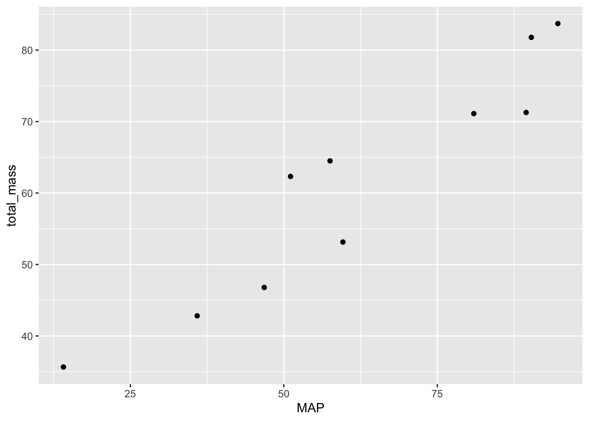
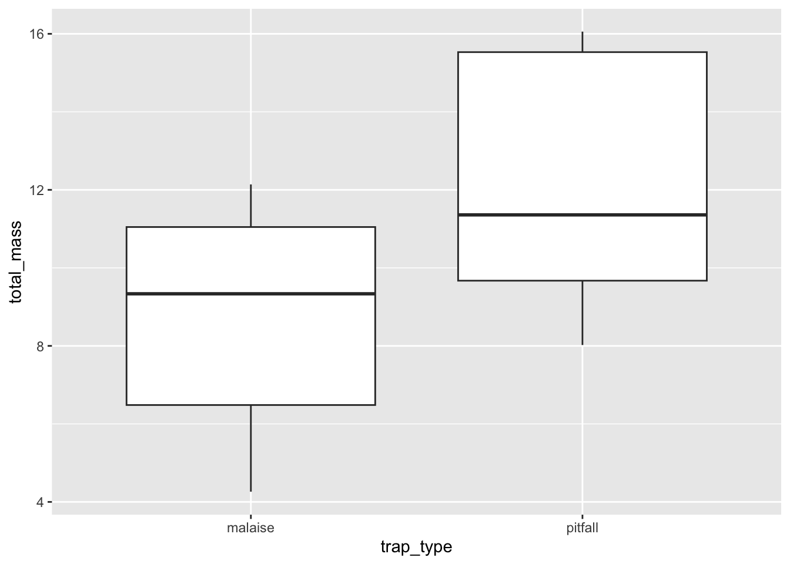

14 Hypothesis testing with your own data
14.1 Goals
- Go from scientific questions, predictions, and data visualizations to null hypothesis testing
14.2 Learning the Tools
We have gone over the steps of null hypothesis testing, they are:
- State null and alternative hypotheses
- Calculate test statistic
- Identify null distribution
- Calculate \(P\)-value
- Decide:
- Reject null
- Fail to reject null
Now we will be putting these steps to use “in the wild” as we analyze our own data. When we apply these steps “in the wild” we might find that it is actually more of an iterative process, at least while we are still learning how to associate different types of data and questions with different null hypothesis tests.
So you might propose a null hypothesis and associated test statistic, only to realize that there is no appropriate null distribution for that test statistic. In this case you would have to circle back to figuring out a more appropriate test statistic and null hypothesis. Or you might immediately know how to go from prediction to one of the null hypothesis tests we’ve covered. In that case no need to iterate on it, just proceed.
Let’s again use the hypothetical example of arthropod biomass in Hawaiʻi. In the previous lab our first prediction and associated plot was:
Prediction: total biomass increases with more rainfall
This seems well suited to a correlation test. Great, we know how to do that, so we don’t need to iteratively find the right null hypothesis and test statistic.
The null hypothesis is that there is zero correlation between MAP and total mass (i.e. \(H_0 \text{: } \rho = 0\)). The alternative hypothesis is that MAP and total mass have a non-zero correlation (i.e. \(H_A \text{: } \rho \neq 0\)).
The test statistic is the sample correlation coefficient \(r\). And the null distribution is the \(t\) distribution with \(df = n - 2\) degrees of freedom.
We can use the cor.test function to run this null hypothesis test
# recall from the previous lab that we already made the dat_no_spp
# data frame
cor.test(dat_no_spp$MAP, dat_no_spp$total_mass)
Pearson's product-moment correlation
data: dat_no_spp$MAP and dat_no_spp$total_mass
t = 8.3598, df = 8, p-value = 3.177e-05
alternative hypothesis: true correlation is not equal to 0
95 percent confidence interval:
0.7870093 0.9877622
sample estimates:
cor
0.9472517 Now we decide: the \(P\)-value is much less than \(\alpha = 0.05\) so we reject the null of no correlation.
Now let’s have a look at the next prediction we had from the last lab:
Prediction: Malaise traps will catch less biomass of species 1 compared to pitfall traps

Here we have a categorical explanatory variable and a numerical response variable. This is well-suited for a \(t\)-test. Because we have two categories, we might be tempted to do a two-sample \(t\)-test.
Our hypotheses are:
- \(H_0\): \(\mu_\text{malaise} = \mu_\text{pitfall}\)
- \(H_A\): \(\mu_\text{malaise} \neq \mu_\text{pitfall}\)
The test-statistic is the difference in the two sample means divided by the pooled standard error. But wait! Perhaps we should iterate on this a little. Each replicate of the pitfall traps and malaise traps are located at the same site, so really we have a paired \(t\)-test.
The null and alternative hypotheses stay the same, but the test statistic will change because the standard error calculation is different between two-sample and paired \(t\)-tests. Our degrees of freedom, and thus are null distribution, will also be very different between the two-sample \(t\)-test and the paired \(t\)-test. For the paired \(t\)-test the degrees of freedom are \(df = \text{(number of pairs)} - 1\).
The t.test function will handle these calculations for us
# recall from the last lab we already made the dat_by_trap data frame
just_sp1 <- subset(dat_by_trap, dat_by_trap$species == "species_1")
# MAKE SURE TO SET paired = TRUE!!!
t.test(just_sp1$total_mass ~ just_sp1$trap_type, paired = TRUE)
Paired t-test
data: just_sp1$total_mass by just_sp1$trap_type
t = -5.9705, df = 9, p-value = 0.00021
alternative hypothesis: true mean difference is not equal to 0
95 percent confidence interval:
-4.923264 -2.217636
sample estimates:
mean difference
-3.57045 Now we decide: the \(P\)-value is less than \(\alpha = 0.05\) so we reject the null of no difference between the means.
You might be wondering, what the heck was that crazy code that looked like just_sp1$total_mass ~ just_sp1$trap_type? What is the ~ (tilde)?! That is a way to tell R how to interpret your hypothesis about the data. You could read y ~ x as “I hypothesize that y is predicted by x”. So here we have a column total_mass and we’re asking, could it be predicted by the column trap_type?
14.3 Questions
Now it’s your turn to to walk through the steps of hypothesis testing. For each of the visualizations/predictions you made in the last lab, go through these steps:
- State null and alternative hypotheses
- Calculate test statistic (and include a written justification for why this test statistic is appropriate)
- Identify null distribution (and include a written justification for why this null distribution is appropriate)
- Calculate \(P\)-value
- Decide:
- Reject null
- Fail to reject null
You will again submit your answers via a google doc. Complete steps 1–3 in the doc and then check your reasoning with your TA before proceeding to steps 4–5.